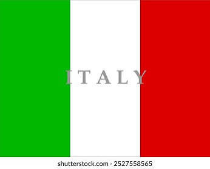
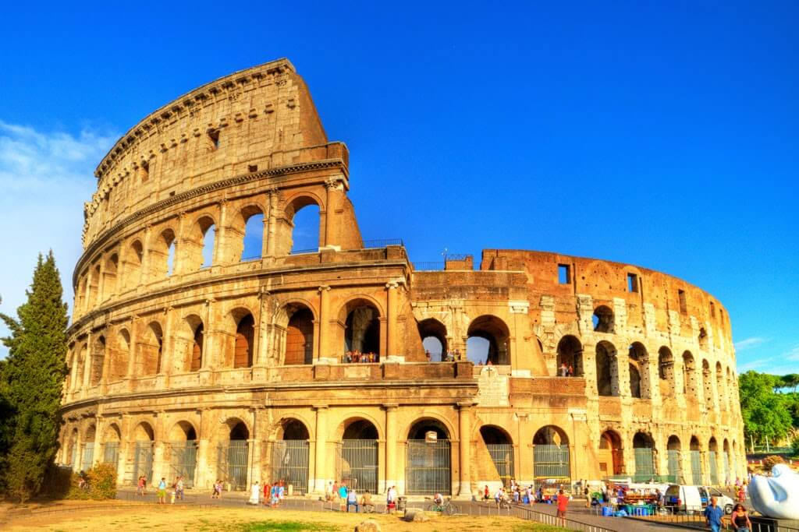

A Itália é um país localizado no sul da Europa, conhecido por sua história, cultura e belas paisagens. Sua capital é Roma e sua língua oficial é o italiano. O país possui o formato parecido com uma bota e é banhado pelo Mar Mediterrâneo. A Itália também é famosa por sua arte, arquitetura, moda e tradições. Além disso, possui cidades históricas, montanhas, praias e monumentos antigos.

A pizza é uma das comidas mais famosas da Itália, especialmente a pizza tradicional de Nápoles. Ela pode ter diferentes sabores, mas uma das mais conhecidas é a pizza Margherita, feita com molho de tomate, queijo muçarela e manjericão. A pizza italiana é apreciada em vários países do mundo.

As massas são muito tradicionais na culinária italiana. Existem diversos tipos, como espaguete, lasanha, ravióli e penne. Elas podem ser preparadas com diferentes molhos, como molho de tomate, molho branco e pesto. As receitas variam de acordo com a região do país.

O gelato é uma sobremesa italiana parecida com o sorvete, mas possui características próprias de preparo e textura. Pode ser encontrado em diversos sabores, como chocolate, morango, pistache e baunilha. É muito popular entre os moradores e turistas.

O Coliseu está localizado em Roma e é um dos monumentos mais famosos da Itália. Construído no século I d.C., era utilizado para espetáculos públicos, incluindo combates de gladiadores. Atualmente, é um dos principais símbolos da história do Império Romano e recebe milhões de visitantes.

A Torre de Pisa fica na cidade de Pisa e é famosa por sua inclinação. Ela começou a ser construída no século XII e ficou conhecida mundialmente por sua aparência inclinada. O monumento é um dos pontos turísticos mais fotografados da Itália.

Veneza é uma cidade italiana conhecida por seus canais e passeios de gôndola. Em vez de muitas ruas tradicionais, a cidade possui canais que podem ser atravessados por barcos. Sua arquitetura histórica e suas pontes tornam Veneza um dos destinos mais encantadores do país.
A Itália é conhecida por ter um território com formato semelhante ao de uma bota. Esse formato é facilmente reconhecido nos mapas e é uma das características geográficas mais famosas do país.
Roma foi o centro do antigo Império Romano, uma das civilizações mais importantes da história. Os romanos construíram estradas, aquedutos, anfiteatros e outras obras que influenciaram muitas sociedades até os dias atuais.
Dentro do território italiano existem dois pequenos Estados independentes: o Vaticano, localizado em Roma, e San Marino, situado próximo à região central da Itália. Ambos possuem governos próprios.
O futebol é muito popular na Itália. A seleção italiana masculina já conquistou quatro títulos da Copa do Mundo, nos anos de 1934, 1938, 1982 e 2006. O país também possui clubes conhecidos internacionalmente.